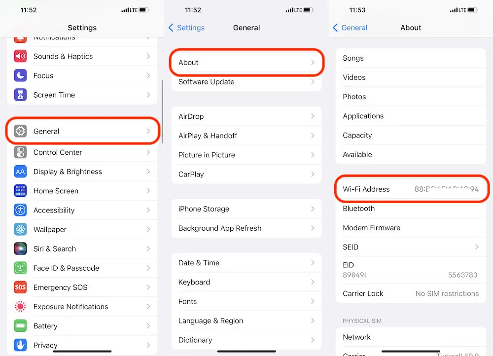

How to find the MAC address on your iPad
Find MAC Address on iPad
You can find two ways to find the mac address on your Ipad. So first the easiest way you need right now. Click your Wi-Fi icon right here, now click on Open network preferences, which open up the network settings. Now click on it, and that will open up the network settings window So now you'll see one of the additional options again at the bottom. And now you need to click on advanced So reach down to that page and if it's there.
Like on tcp dns or wherever. You need to click on that wi-fi The first option and on the bottom you can see the wi-fi address which is 38 and everything, so that's your mac. address. So this wi-fi address is your mac. address so that's the first and easiest way...

View the MAC address (displays in the Wi-Fi Address field).
Now you need to click on the OK button. Now you need to do what you need to do again. Click on that apple icon, then you need to go to system preferences which has already opened up, so you access the screen. Now you need to click on that network icon, which is which is the middle line network icon. Click here and you again access the screen where you know, network has reached preference, so again the screen is extended and the bottom wi-fi address.
Your mac address, so those are two ways to find your mac address on your ipad.